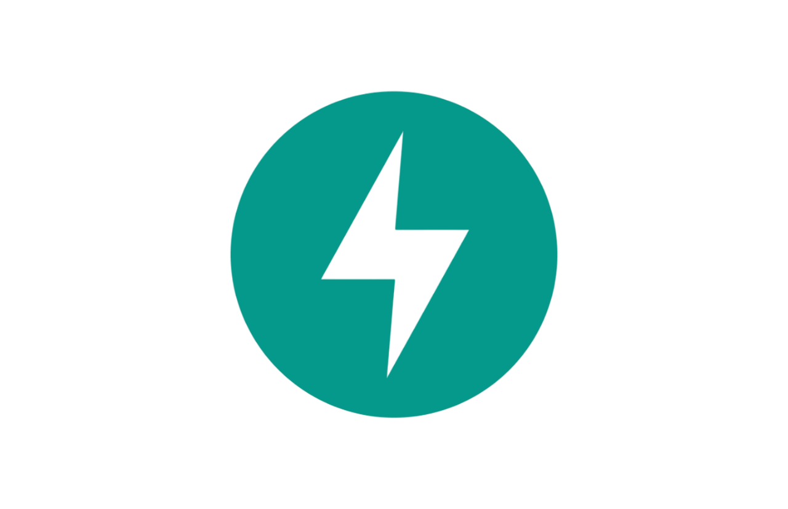
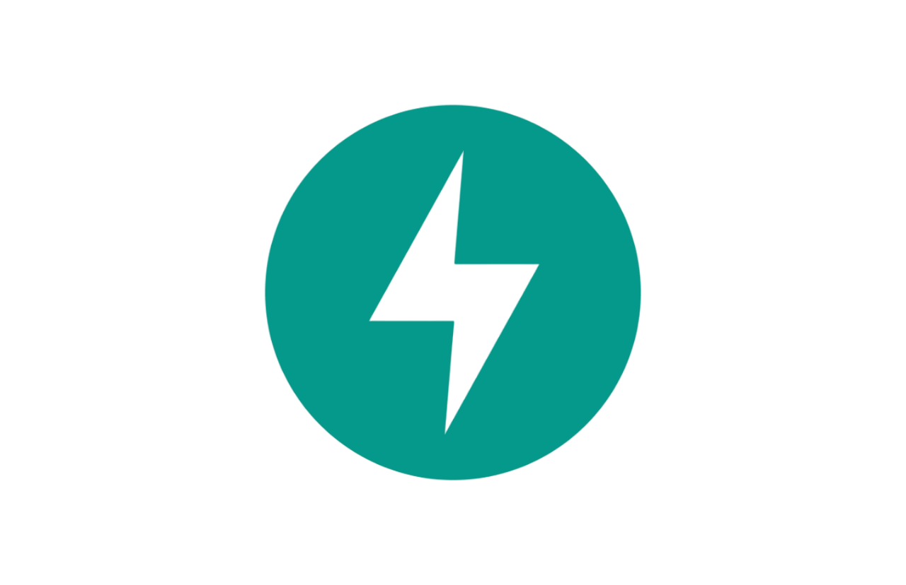

My Projects
Azalea: Eco-Friendly AI Model Selector


 


June 2024 - Present
Built React/FastAPI app integrating GPT4, Google Search, and Mistral APIs, achieving up to 25% energy reduction per query by dynamically selecting optimal AI model based on input complexity and energy consumption. Assembled ML pipeline with nltk to preprocess 1000+ queries and Random Forest to predict input complexity. Implemented MongoDB to store energy consumption data, developed algorithms to aggregate cumulative environmental impact across multiple user sessions, translating AI usage into 3 quantifiable sustainability metrics.
First Place Overall at AI for Change Hackathon

SkyCast: Flight Delay Predictor

April 2024 - June 2024
Developed a Flask-based application that harnesses the Open-Meteo API to predict flight delays by analyzing 5 real-time weather metrics: temperature, precipitation, wind speed, pressure, and visibility. Engineered a RandomForestRegressor model using pandas and scikit-learn achieving a MAE of 1.48 minutes. Designed a scalable React interface for dynamic user interaction; integrated with a Flask backend to handle over 33,000 API calls daily, ensuring real-time delay predictions and optimal performance during peak traffic.
Drug Efficacy Analysis and Prediction Tool


December 2024 - January 2024
Employed JDBC to connect to a MySQL database and utilized SQL queries to analyze the efficacy of the drug Tagrisso, considering factors such as sex, age, and treatment duration to provide insights for over 800,000 patients. Executed OLS Multiple Linear Regression using Apache Commons Math for model training and predictive analytics. Predicted drug efficacy based on patient info and treatment details, achieving a mean squared error of <0.1.
Vital Smart: IoT based In-Home Health Monitoring System

June 2021 - August 2023
Vital Smart allows for the measurement of multiple vitals, stores the results, and displays them in real-time through a web portal and mobile application. The system also features a custom-built AI-based advice engine that analyzes the user’s vitals and provides a basic diagnosis on whether they should seek medical help. It also notifies the user and their relatives through SMS of any abnormal values.
Clevr - Peer Tutoring Learning Management System
May 2020 - June 2023
Clevr is an automated matchmaking software that has efficiently connected with over 700 users to date. It employs algorithmic techniques via Google Apps Script to continuously foster resident learning hubs hands-free. This faculty-endorsed system, now in its fifth operational year, bridges the personalization gap in instruction while ensuring seamless communication.
Baby Saver - Hot Car Alert Device
September 2018 - August 2020
Baby Saver prevents hot car child deaths by detecting a baby in a car seat and sending automated alerts when the car's temperature crosses certain thresholds. The device has a multi-level alert system with configurable temperature thresholds. When the first threshold is crossed, parents receive a phone alert. At the second threshold, a buzzer sounds to alert nearby people. At the third threshold, local authorities receive an alert with the car's GPS coordinates to help locate the child quickly.
Patent #63104815 · Filed Oct 23, 2020
My Skills
Languages
Python
Java

C
C++
JavaScript
HTML

CSS

R

SQL
Assembly
Frameworks and Libraries
React.js
Node.js
Flask
FastAPI

pandas

scikit-learn
NumPy
SciPy

matplotlib
Developer Tools and Databases
VS Code

Eclipse
RStudio

Git

JDBC
mongoDB
mySQL
Firebase
My Experience
Software Engineering Intern
AstraZeneca - Evinova
Deploying Wi-Fi CSI data analysis for real-time patient monitoring, helping achieve a 40% reduction in clinical visits. Leveraging Pandas for data ingestion, NumPy for array manipulations, SciPy for Elliptic bandpass filtering and peak detection, and Matplotlib for visualizations; streamlining PCA and signal analysis on time series data, contributing to 32% reduction in trial costs. Implementing a supervised learning model using scikit-learn's fine tree algorithm for binary and multi-class classification, achieving up to 96.9% accuracy. Employing k-fold cross-validation for substantial bias reduction, and utilizing confusion matrices to fine-tune classification thresholds, pivotal in accelerating trial timelines by 6 months.
Human-Computer Interaction Intern
The Center for Applied Technologies for School Security
Conducting user testing sessions to enhance OWL app usability and improve user satisfaction, developing feedback questionnaires to gather actionable insights for product enhancements, and producing a report on findings, applying UX design heuristics to support a safer learning environment.
Software Engineer Intern
Proxzar.AI
Gained proficiency in Proxzar AI/NLP technologies, aiding in boosting text analysis processing speeds by 20%. Innovated conversational chatbots from complex datasets using React, enhancing user interaction for 250+ clients. Led deployment of 5 UIs for chatbot and contextual search features, increasing user satisfaction scores by 35%.
Engineer Intern
United Safety & Survivability Corporation
Assembled blast-adaptive military seats, integrating components for optimal functionality, tested for performance issues and optimizations, trained in CAD techniques using SOLIDWORKS, and designed innovative 5-point harness restraint alternatives for current models.
My Education

University of Maryland - College Park
Graduating in May 2026
GPA 3.7/4.0
UMD Honors College - Global Communities Program
Major: Computer Science, Machine Learning Concentration
Minor: Data Science
Awards:
Related Coursework:
Fall 2024 Relevant Coursework:
My Extracurriculars
xFoundry @ UMD
Selected as one of 30 students for the inaugural cohort of xFoundry, a 15-month program focused on entrepreneurship and product development. Leading the development of an AI-enabled system for real-time detection, tracking, and notification of active shooter events in 1,400+ K-12 schools and colleges, supported by a $250K-$2M investment.
UMD Honors Global Communities (HGLO)
Leveraging data visualization and statistical analysis techniques to analyze and interpret global issues, integrating insights from computer and political sciences. Conducting an ongoing data-driven policy analysis project using R, analyzing over 1,500 survey responses on military and gun control policies, culminating in a professional memo presented to a U.S. senator.